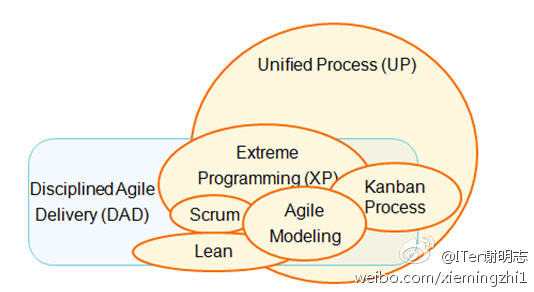

@极客头条@育儿男人帮_毛豆爸爸:IBM的敏捷纲领 “规范敏捷交付（DAD）方法框架“ 是一个以人为本，学习型的、混合型敏捷方法。它有一个风险驱动、也是价值驱动的全生命周期的，符合企业规范的过程。 链接网页链接 
//@我是你的主题曲哥哥: 大概看了下文章，我想表示的是：请认真看完，再来要说法。CSDN只是负责采访，友盟中立不中立这个说法，你确定是CSDN说的吗？你要是有不同意见，可以站出来发声，发表自己的看法，CSDN是一个媒体平台，可以发表不同的观点……如果只是一味要求删内容，这说明什么？---:抱歉，作者已设置仅展示半年内微博，此微博已不可见。
这个数据去年看到过，#社区运营#有这么热吗？//@lvxinke:@Ada李力 的社区运营//@微数据:@数据吧:【2014最受雇主青睐的25专业技能】1.社区运营；2.移动开发；3.云运算4.Perl/Python/Ruby编程；5.统计分析和数据挖掘；6.用户界面设计；7.数码和网络运营；8.招聘；9.商务开发/商务关系管理；10.零售业支付和信息系统。详见下图！！
俺也在看。喜欢千颂伊这个角色，当红落魄时都不失气场，积极+正能量，真实面对自己的感情，所以糗事做得出来，能二能疯，搞笑的事情不少，理性恢复后也能hold住，经历这么多还是能时不时流露少女神态和稚气。@龚文祥:现在身边的女性都在追（来自星星的你）剧，而且都是疯狂的追捧，为近几年来罕见。我今天第一次听说此剧。做市场营销的，什么流行就必须追什么，分析流行的原因才了解中国主流女性消费形态。问电商女性，这部剧为何那么流行？除了男主角帅？
至于《来自星星的你》中的都敏俊，满足了女性所有的幻想：富可敌国，有超能力，随身在身边听候差遣，并兼任保护者，不老容颜，而且竟然是童贞男一枚，400年没和异性kiss过，忠贞得很哪，只爱一人。所以，这种角色，国外编剧写成吸血鬼，韩国编剧写成外星人，因为这样地球人根本不存在嘛。
//@严锋:汗啊，这是我看的第一部韩剧。迷韩剧的真正大腕是……你们绝对想不到，是王安忆老师！她说看了好多，最喜欢的一部叫《阁楼男女》。//@sthblue: 如此坦然地看韩剧讨论韩剧的复旦教授，严锋老师绝对是我关注的微博名人中最具真性情的一位---:抱歉，作者已设置仅展示半年内微博，此微博已不可见。
深以为然。@得蜜:前段时间追《星你》，觉得二千讨人喜欢死了，她有生龙活虎的生命力，顺境逆境都能接得住。在爱的人面前，让人折服的赤诚坦荡，绝不死要面子，但却有尊严感。在自己不爱的追求者面前，不卑不亢，绝不因感动而星星眼。在看自己笑话踩自己上位的人面前，她从不输阵，是真正的内心强大完整，而非外强中干。
 网页链接
网页链接